2015-12-29 - Nº 35

Editorial
Aqui está a Newsletter Nº 35 no seu formato habitual. Se gostar da Newsletter partilhe-a!
Todas as Newsletters encontram-se indexadas no link.
Esta Newsletter tem os seguintes tópicos:
Esta é a última semana do ano. Ficámos a saber que a Panasonic desenvolveu uma resina especial que é um polímero flexível e que juntamente com outro material permite a criação de circuitos electrónicos flexíveis. Depois de dois anos, o Yutu - veiculo lunar chinês - descobriu um novo tipo de rocha lunar. Esta poderá ser muito importante para revelar as origens do nosso satélite natural. Na véspera de Natal foi lançada a primeira versão do Perl 6. O seu desenvolvimento começou à 15 anos atrás!.
Durante 35 semanas a Newsletter trouxe novidades, dicas, circuitos, apresentámos outros projetos de maker, identificámos modelos 3D interessantes, cursos online interessantes de participar, ferramentas open source muito úteis, etc.
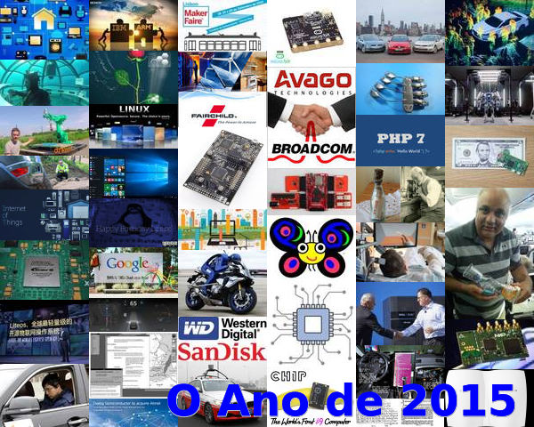
Em retrospectiva do ano de 2015 tivemos como principais noticias a Tesla a apresentar o "powerWall" - sistema de baterias para casa, o Linux que fez 24 anos e lançou a versão 4.3, o primeiro site web que foi montado à 25 anos. No mundo empresarial, observámos que foi rico em fusões, a Avago technologies comprou a Broadcom, a Intel adquiriu a Altera, a Dialog Semiconductor comprou a Atmel. A Dell e a EMC juntaram-se. A Western Digital adquiriu a SanDisk, a ON Semiconductor adquiriu a Fairchild Semiconductor e a NXP fundiu-se com a Freescale. Cá em Portugal tivemos mais uma Maker Faire Lisbon - esta já sem o "Mini".
Vimos nascer diversos Microcomputadores: o BBC micro:bit para as escolas inglesas, o Raspberry Pi Zero, o C.H.I.P., o TI MSP432, o Artik da Samsung, o Tessel 2 No universo do IoT, observámos diversas iniciativas como o LiteOS, o Brillo, o Thread Wireless Networking Protocol, o AWS IoT, a ARM juntar-se com a IBM e ARM lança novo produtos.
A Microsoft mudou o paradigma dos Sistemas Operativos Windows "Oferecendo" a atualização para o Windows 10. A Google reconfigurou a sua organização criando uma entidade chapéu - a Alphabet. Tivemos o caso de utilização de electrónica para contornar os resultados de testes de poluição em veículos do grupo Volkswagen.
No campo das noticias bizarras: a mensagem mais antiga dentro de uma garrafa foi encontrada - tem 108 anos, uma horta debaixo de agua, existe agua em Marte e ficámos a saber que os neutrinos têm massa. Uma equipa cria circuitos analógicos e digitais dentro de plantas vivas. Um médico salvou um bebé de 2 anos recorrendo a um dispositivo improvisado dentro de um avião. Foi descoberto um documento onde a constante PI é associada a física quântica.
Noticiámos o aparecimento de carros autónomos da Tesla e da Baidu. São também noticia os problemas(../13/#Novidades-da-Semana) destas tecnologias emergentes. Falámos da Jaguar com o seu controlo remoto do carro. A Yamaha apresenta o seu MOTOBOT - mota conduzida por um robot.
Foi igualmente noticia uma viatura ser controlada através do cerebro e um inventor que desenvolveu um carro com condução autónoma na sua garagem.
A construção de Móveis em 3D ou um homem paralisado que consegue usar o braço com sinais do seu cerebro, a utilização de exoesqueletos para desempenhar funções complicadas para o Homem. A impressão 3D de umas costelas para utilização num ser Humano.
Finalmente foram lançados o PHP 7 e o Perl 6.
Na Newsletter desta semana falamos de vários projetos de maker que poderão ser interessantes de explorar. Iremos construir um circuito que permite usar um relógio de tempo real (RTC). E em jeito de balanço apresentamos todas as ferramentas open source que foram abordadas ao longo de 2015 e atualizamos as suas versões.
Votos de Boas Festas para todos. Bom ano de 2016!
 João Alves ([email protected])
João Alves ([email protected])
O conteúdo da Newsletter encontra-se sob a licença  Creative Commons Attribution-NonCommercial-ShareAlike 4.0 International License.
Creative Commons Attribution-NonCommercial-ShareAlike 4.0 International License.
Novidades da Semana ^
-
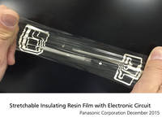
"Panasonic Corporation announced today that the company has developed a soft, flexible, and stretchable[1] polymer resin film using its proprietary stretchable resin technology. The Company will also provide a transparent electrode material[2] and conductive paste[3] along with this insulating film. This newly developed material is an insulating film material that stretches and returns to its original shape, a feature that is hard to find in conventional flexible materials. It adapts to desired manners of folding and to varying free-form surfaces, substantially reducing existing design constraints. For example, it enables the construction of soft and stretchable electronic devices that are adaptable to a variety of forms, such as of clothing and the body. The newly developed material is deployable in a broad range of applications, from wearable devices to sensors, displays, and robots."
China’s Lunar Rover Discovered a New Kind of Moon Rock
"After two years on the moon, a Chinese lunar rover named “Yutu,” has uncovered a new type of moon rock on a long-dead lava flow. According to a new study published in the journal Nature Communications, the unique composition of the recently discovered rocks is revealing new insights into the moon’s origins. The rover is part of China’s Chang'e lunar mission, which conducted the first lunar “soft landing” in almost 40 years. The Chang’e-3 lander and Yutu touched down smoothly on the surface of the moon in January 2013. But while Yutu now holds the record for the longest stay by a lunar rover, it hasn’t actually done all that much roving, Jeff Foust reports for SpaceNews. The rover started experiencing problems just a few lunar days into its mission, causing many of its systems to lock up."
Perl 6 - Day 24 – An Unexpectedly Long-expected Party
"Hi, I’m Camelia, if you don’t know me. (Or even if you do.) They told me I had to give a speech at Perl 6’s official Coming Out Party. So here I am. Someone else is doing the roast. I’m just the toast. They told me it had to be a serious speech. Ha, like I’d know how to give a serious speech. Seriously? Well. Seriously, I’d like to thank you all for coming out today. Oops, I guess that was a pun. Sorry. Well, no, not really.. But thanks for showing up. This is a big day for Perl 6. She is officially of age now. Well, kinda sorta. She has her driver’s license, anyway. Watch out, world!"
Ciência e Tecnologia ^
-
"For decades, Europe and the United States have led the way when it comes to high-energy particle colliders. But a proposal by China that is quietly gathering momentum has raised the possibility that the country could soon position itself at the forefront of particle physics. Scientists at the Institute of High Energy Physics (IHEP) in Beijing, working with international collaborators, are planning to build a 'Higgs factory' by 2028 — a 52-kilometre underground ring that would smash together electrons and positrons. Collisions of these fundamental particles would allow the Higgs boson to be studied with greater precision than at the much smaller Large Hadron Collider (LHC) at CERN, Europe's particle-physics laboratory near Geneva, Switzerland. Physicists say that the proposed US$3-billion machine is within technological grasp and is considered conservative in scope and cost. But China hopes that it would also be a stepping stone to a next-generation collider — a super proton–proton collider — in the same tunnel."
3-D printed 'building blocks' of life
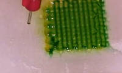
"Scientists have developed a 3-D printing method capable of producing highly uniform 'blocks' of embryonic stem cells. These cells – capable of generating all cell types in the body – could be used as the 'Lego bricks' to build tissue constructs, larger structures of tissues, and potentially even micro-organs. The results are published today, Wednesday 4th November, in the journal Biofabrication. “It was really exciting to see that we could grow embryoid body in such a controlled manner”, explains Wei Sun, a lead author on the paper. “The grown embryoid body is uniform and homogenous, and serves as a much better starting point for further tissue growth.”"
New "tricorder" technology might be able to "hear" tumors growing
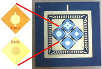
"A new technology has promise to safely find buried plastic explosives and maybe even spot fast-growing tumors. The technique involves the clever interplay of microwaves and ultrasound to develop a detector like the Star Trek tricorder. Stanford engineers are using microwaves and ultrasound to create a safe and portable way to detect hidden objects. When Dr. Leonard "Bones" McCoy needs to diagnose an ill member of the Starship Enterprise, he simply points his tricorder device at their body and it identifies their malady without probing or prodding. Similarly, when Capt. Kirk beams down to an alien world, his tricorder quickly analyzes if the atmosphere is safe to breathe. Now Stanford electrical engineers have taken the latest step toward developing such a device through experiments detailed in Applied Physics Letters and presented at the International Ultrasonics Symposium in Taipei, Taiwan."
VertiGo – A Wall-Climbing Robot including Ground-Wall Transition
"VertiGo is a wall-climbing robot that is capable of transitioning from the ground to the wall, created in collaboration between Disney Research Zurich and ETH. The robot has two tiltable propellers that provide thrust onto the wall, and four wheels. One pair of wheels is steerable, and each propeller has two degrees of freedom for adjusting the direction of thrust. By transitioning from the ground to a wall and back again, VertiGo extends the ability of robots to travel through urban and indoor environments. The robot is able to move on a wall quickly and with agility. The use of propellers to provide thrust onto the wall ensures that the robot is able to traverse over indentations such as masonry. The choice of two propellers rather than one enables a floor-to-wall transition – thrust is applied both towards the wall using the rear propeller, and in an upward direction using the front propeller, resulting in a flip onto the wall."
Modelos 3D ^
Com a disponibilidade de ferramentas que permitem dar azo a nossa imaginação na criação de peças 3D e espaços como o thingiverse para as publicar, esta rubrica apresenta alguns modelos selecionados que poderão ser úteis.
Parametric Folding Loupe (http://www.thingiverse.com/thing:1213888)
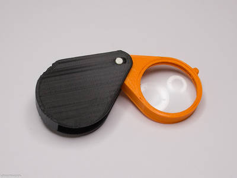
I never go out...
...without my loupe.
===
I always have one with me, but it's hard to find quality lenses that also come with a lightweight fitting. Here's my solution...
Random maze cube generator, pure OpenSCAD (http://www.thingiverse.com/thing:1191166)
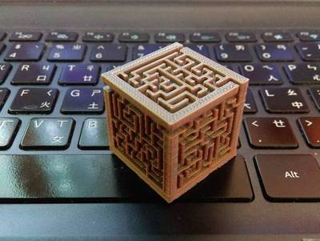
This thing is based on Random maze generator, pure OpenSCAD. You may change the following parameters to generate a maze cube. Each side has a different maze every time.
- x_blocks
- y_blocks
- z_blocks
- wall_thickness
- wall_height
- block_width
- edge_enabled : "YES" for enabled
MCAD replacement for nuts_and_bolts.scad (http://www.thingiverse.com/thing:1220331)
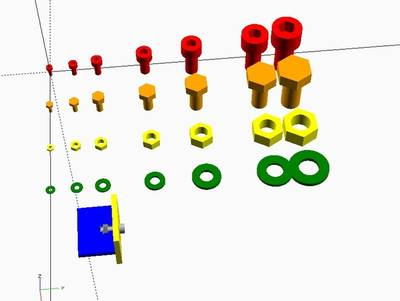
Replacement library for the OpenSCAD MCAD nuts_and_bolts.scad library.
Also see this superior nut and bolt library.
Import this library into your OpenSCAD design:
include </path/to/libraries/nuts_and_bolts.scad> mBolt(m3); Because of the lookup functions you will need to use import instead of use. Make sure you comment out the simpleDemo() line as well.
This library provides metric series fasteners in the following sizes: 2, 3, 4, 6, 8, 10, 12. Additional sizes can be added easily.
The following fasteners are provided:
- M Bolts with hex socket and hex heads
- M Nuts (standard only, no thin)
- M Washers
- T - Slot cutouts for laser cut joints
NOTES
This is NOT a drop in replacement for the MCAD library, but rather an extension with more features OpenSCAD 2015.03-2 crashes HARD if the called m bolt size does not exist due to a bug in the lookup() function. A bug report has been filed and should be fixed in the next release: https://github.com/openscad/openscad/issues/1528
Open Source ^
Este ano de 2015 foi bastante interessante em termos de ferramentas Open Source. Não iremos apresentar nenhuma em concreto esta semana. Iremos sim revisitar todas as que foram apresentadas e atualizar as versões das mesmas. Foi feita uma organização por tipologia.
Desenho e construção de PCBs:
Desenho e modelação 3D:
- OpenSCAD versão 2015.03-2 (Mar/2015) - link
- Meshlab versão 1.3.3 (2/Abr/2014) - link
- FreeCAD versão 0.15 (Mar/2015) - link
- blender versão 2.76b (3/Nov/2015) - link
- Wings 3D versão 1.5.4 (Ago/2015) - link
Desenho 2D:
Ferramentas de programação:
- Arduino IDE versão 1.6.7 (17/Dez/2015) - link
Edição de Texto:
Gestão de ficheiros comprimidos:
Comunicações:
Ferramentas de produtividade:
- LibreOffice versão 5.0.4 (20/Dez/2015) - link
Navegação na Internet:
Multimédia:
- Audacity versão 2.1.1 (15/Jul/2015) - link
- VLC media player versão 2.2.1 (16/Abr/2015) - link
Gestão de passwords:
Circuitos ^
Aqui é apresentado um circuito simples que poderá ser construído com componentes.
Circuito de relógio de tempo real (RTC).
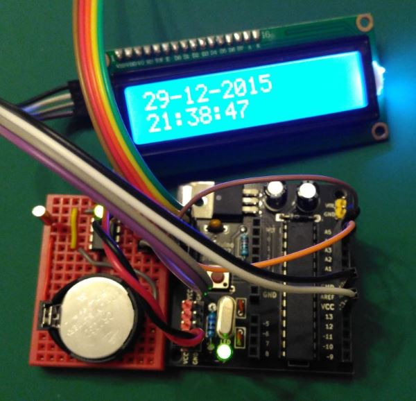
Estando perto do fim do ano, resolvemos construir um circuito para controlar um relógio de tempo Real (RTC). Um RTC caracteriza-se por ser uma fonte de tempo autónoma que trabalha de forma independente do resto do circuito. Para implementar este circuito recorreu-se ao DS1307, este IC comunica com o exterior através do protocolo I2C.
Foi usado um CSEduino para programar a hora e para posteriormente a apresentar. O DS1307 para funcionar precisa de um cristal oscilador (de 32.768 KHz) e de uma fonte de energia de 3.3V de backup (tipicamente uma pilha tipo CR) para quando o IC não se encontra alimentado.
A comunicação I2C é feita através dos dois pinos SCA e SCL do IC (estes devem ter resistências ligadas aos 5V para garantir que têm um Pull-UP nas linhas. Isto acontece porque o IC tem transístores que funcionam em modo open-drain.
O Integrado DS1307 tem uma memória de 56 bytes do tipo NVSRAM. Esta tem posições fixas onde se encontra a data/hora atual:
- Endereço 00h - Segundos (usa os bits 0-6) e está guardado em formato BCD (Bit 0-3 para as unidades (0-9), bit 4-6 para as dezenas (0-5)). O bit 7 é usado para o CH - Clock Halt - permite parar o relógio.
- Endereço 01h - Minutos (usa os bits 0-6) e está guardado em formato BCD (Bit 0-3 para as unidades (0-9), bit 4-6 para as dezenas (0-5))
- Endereço 02h - Horas
- Bit 6 para indicar se é 12 ou 24.
- Em modo 24 horas - Bit 4-5 para as dezenas (0-2)
- Em modo 12 horas - bit 4 para as dezenas (0 ou 1) e bit 5 para AM ou PM.
- Bit 0-3 - para as unidades (0-9)
- Endereço 03h - Dia da Semana (usa os bits 0-3) (0-7)
- Endereço 04h - Dia do mês (usa os bits 0-5) e está guardado em formato BCD (Bit 0-3 para as unidades (0-9), bit 4-5 para as dezenas (0-3))
- Endereço 05h - Mês (usa os bits 0-4) e está guardado em formato BCD (Bit 0-3 para as unidades (0-9), bit 4 para as dezenas (0-1))
- Endereço 06h - Dia do mês (usa os bits 0-7) e está guardado em formato BCD (Bit 0-3 para as unidades (0-9), bit 4-7 para as dezenas (0-9))
- Endereço 07h - Bit 7: OUT, Bit 4: SQWE, Bit 1: RS1 e Bit 0: RS0. Este endereço é usado para controlar a operação do pino SQW/OUT.
- Endereço 08h a 3Fh - RAM
Esquemático
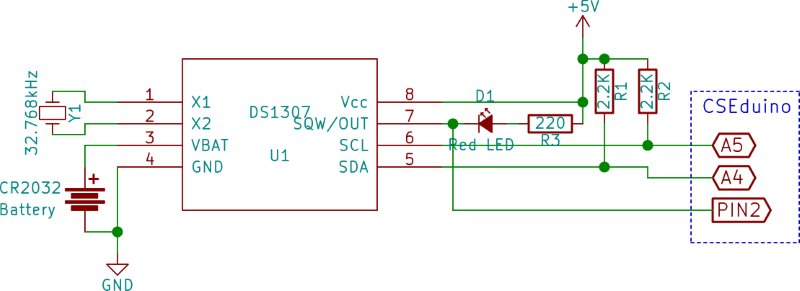
Componentes (BOM):
- 1x IC DS1307 (U1)
- 1x LEDs 5mm Vermelho (D1)
- 1x Resistência de 220 Ohms (R3)
- 2x Resistências de 2.2K Ohms (R1, R2)
- 1x Cristal Oscilador de 32.768kHz (Y1)
- 1x Bateria de 3.3V - CR2032
Associamos ao projeto um display LCD com o integrado HD44780 (ver o circuito da Newsletter Nº 12) para apresentar a data. O CSEduino (ver informação adicional na Newsletter Nº5) foi acrescentado para escrever e ler a informação do RTC e apresentá-la no Display LCD.
Pin-out dos IC/Componentes
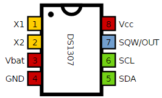
Sketch para correr no CSEduino/Arduino
O código apresentado usa as seguintes bibliotecas externas:
- NewliquidCrystal. Pode ser descarregado localmente deste link.
- Time. Pode ser descarregado localmente deste link
- DS1307RTC. Pode ser descarregado localmente deste link
#include <Time.h>
#include <Wire.h>
#include <DS1307RTC.h> //a basic DS1307 library
#include <LiquidCrystal_I2C.h>
// LiquidCrystal_I2C lcd(0x27); // Set the LCD I2C address
LiquidCrystal_I2C lcd(0x27, 2, 1, 0, 4, 5, 6, 7, 3, POSITIVE);
const int sqw_pin = 2;
void setup() {
lcd.begin(16, 2);
lcd.home();
lcd.print("CSEduino LCD i2C");
pinMode(sqw_pin, INPUT);
Serial.begin(9600);
setSyncProvider(RTC.get); //this is the function to get the time from the RTC
lcd.setCursor ( 0, 1 ); // go to the next line
if (timeStatus() != timeSet) {
lcd.print("Unable to sync");
delay ( 5000 );
} else {
lcd.print("RTC system OK");
attachInterrupt(digitalPinToInterrupt(sqw_pin), setDisplay, FALLING);
RTC.sqwOutput(1);
}
lcd.clear();
}
volatile byte display = 1;
void setDisplay() {
if (display == 0) {
display = 1;
}
}
void loop() {
if (Serial.available()) {
display = -1; //disable display updates
time_t t = processSyncMessage();
if (t > 0) {
RTC.set(t); //set the RTC and the system time to the received value setTime(t);
}
display = 1;
}
if (display > 0) {
digitalClockDisplay();
display = 0;
}
}
void digitalClockDisplay() {
if (display) {
//digital clock display of the time
lcd.home();
lcd.print(day());
lcd.print("-");
lcd.print(month());
lcd.print("-");
lcd.print(year());
lcd.print(" ");
lcd.setCursor ( 0, 1 ); // go to the next line
printDigits(hour(), true);
printDigits(minute(), true);
printDigits(second(), false);
}
}
//utility function for digital clock display: prints preceding colon and leading 0
void printDigits(int digits, boolean sep) {
if (digits < 10)
lcd.print('0');
lcd.print(digits);
if (sep)
lcd.print(":");
}
//code to process time sync messages from the serial port
#define TIME_MSG_LEN 11 //time sync to PC is HEADER followed by Unit time_t as ten ascii digits
#define TIME_HEADER 'T' //Header tag for serial time sync message
time_t processSyncMessage() {
//return the time if a valid sync message is received on the serial port
//time message consists of a header and ten ascii digits
while (Serial.available() >= TIME_MSG_LEN) {
char c = Serial.read();
Serial.print(c);
if (c == TIME_HEADER) {
time_t pctime = 0;
for (int i = 0; i < TIME_MSG_LEN - 1; i++) {
c = Serial.read();
if (c >= '0' && c <= '9') {
pctime = (10 * pctime) + (c - '0'); //convert digits to a number
}
}
return pctime;
}
}
return 0;
}
// Sketch uses 8,970 bytes (27%) of program storage space. Maximum is 32,256 bytes.
// Global variables use 549 bytes (26%) of dynamic memory, leaving 1,499 bytes for local variables. Maximum is 2,048 bytes.
O código precisa por uma entrada no formato "T9999999999" via porta série que fará o Setup do RTC. O número a seguir à letra "T" deverá ter 10 dígitos e representar o número de segundos desde 1 Janeiro de 1970.
Para se obter esse número em Linux basta correr o comando: date +%s.
Em Windows para obter esse numero deverão criar um ficheiro com a extensão vbs e colocar-lhe o seguinte conteúdo: wscript.echo(datediff("s",#1970/1/1#,now())).
Caso ambas a soluções sejam complicadas demais podem ir ao seguinte link e ver o valor.
É também configurado o registo do SQW para que o mesmo pulse a 1Hz ou seja 1 vez por segundo. Este input está ligado ao pino 2 do CSEduino que tem uma interrupção associada a este pino, atualizando a data no LCD apenas quando é o valor do pino passa a 0.
Links úteis:
- How to Build a Real-time Clock Circuit with a DS1307 Chip
- Using Arduino with a DS1307 Real Time Clock
- DS1307 Real Time Clock Breakout Board Kit
- DS1307RTC Library
Projetos Maker ^
Diversos Projetos interessantes.
Arduino Spectrophotometer
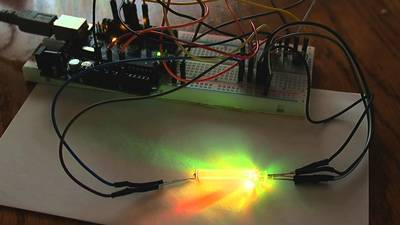
"I'm an amateur astronomer tasked with giving an educational talk to fellow amateur astronomers about how to clean optical surfaces like the lenses of eyepieces and telescopes. I wanted to run a small experiment cleaning some uniform glass samples (that had been coated with dust and mineral deposits) with a variety of commercial and homemade cleaning solutions. But how to quantify the efficacy of the cleaning process? I decided I could run the glass samples before and after the cleaning process through a spectrophotometer and compare transmission profiles. And one can buy a used student spectrophotometer these days on eBay for a ridiculously low price .... but we all have way too much stuff that we buy, use once and then stash away."
No bitbanging necessary, or How to Drive a VGA Monitor on a PSoC 5LP w/Verilog
"In this project I want to show how to drive a VGA monitor at 800x600 60Hz (Edit: and other resolutions and frequencies) using the PSoC hardware implemented in Verilog and driven by the system clock."
ATtiny OLED Watch Core
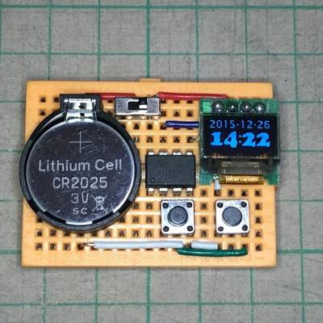
"This instructable show how to use an ATtiny85 to create a tiny watch core that can run over 1 year before recharge or replace battery. The instruction to make the watch case may be in next instructable."
Little Helper
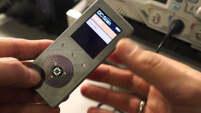
"Today, when building mobile devices one might think about touch displays. I decided to not use them because they do not allow for good, precise single handed operation, and I think that is an important feature for my Little Helper. The second best interface for small devices is a click wheel. Hundreds of million sold iPod seem to prove that."
serialusb – a cheap USB proxy for input devices
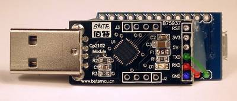
"serialusb is a cheap (~$5) USB proxy intended to be used with input devices. Input devices generally use interrupt IN and OUT endpoints, and operate at low or full speed modes. The maximum throughput is 64 kB/s = 512kbps in each direction (1000Hz, 64-byte packets). A USB proxy requires a system with both device and host interfaces. Many ARM boards fulfill this requirement, but those aren't as cheap (yet)."
VGA Tetris With Arduino Uno
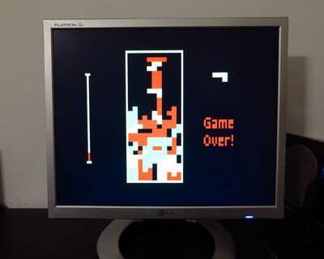
"I have reproduced a color version of the classical game TETRIS running for a VGA monitor, by means of a bare Arduino Uno and few other components. The goal was to avoid any special shield or supporting IC. The only needed components are four buttons, few resistors and a DSUB15 connector. I used Arduino IDE 1.6.4. and the VGAx library done by Smaffer and publish on GitHub here."
World's Smallest Power Supply !
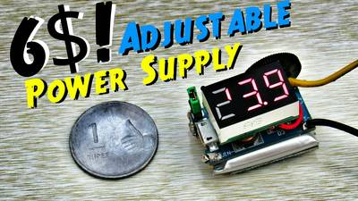
"Have you ever wanted tiny sized power supply that still pack lots of power, here's world's smallest power supply you can make under 6$ !!! Following Features will impress you that's for sure so why not make one ?"
Super Efficient Joule Thief DIY
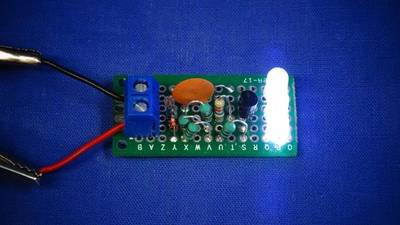
"A joule thief is a minimalist Armstrong self-oscillating voltage booster that is small, low-cost, and easy to build, typically used for driving light loads.It can use nearly all of the energy in a single-cell electric battery, even far below the voltage where other circuits consider the battery fully discharged; hence the name, which suggests the notion that the circuit is stealing energy or "joules" from the source. The term is a pun on the expression "jewel thief": one who steals jewelry or gemstones. Super Efficient Joule Thief DIY to steal all the last energy from a battery and without any Toroid coil. Save your time to get more effect. In this project i will shows you the combination simplicity of the circuit and a few variants on the design which add extra components to improve efficiency to make one.The materials of this project is a single, general purpose small NPN 2n2222 transistor A331, Resistor 5.6K Ohm 1/4W,10nf ceramic capacitor 103, OA90 Germanium signal diode, 5mm round white led, 20 mA, 3.2 V (Light Emitting Diode) and 83uH tiny Inductor instead Toroid coil."
FM Radio With Si4703 Breakout Board, LCD and Arduino
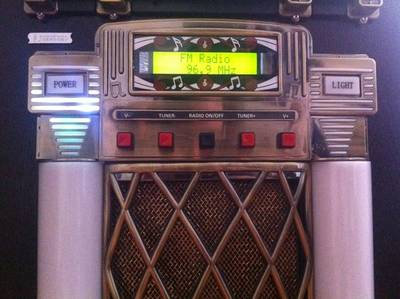
"This project is just a small part of a bigger project I have been working on for the past couple of years (on and off). The background to this project is that a couple years back, I found a modern jukebox (iPod connection, AM/FM radio, CD player...) which had been dumped across the road from my house. The body was in decent condition but almost all of the electronics were damaged or missing. The only parts I managed to salvage were the LEDs on the front panels of the body. So I decided that I was going to do up all of the internal electronics to get the jukebox back up and running. One part of this was to make an FM radio with a LCD and push buttons to control the frequency tuning. After some research, I came across this cool little breakout board that you could use with Arduino to make an FM radio. So here's what I've come up with! Apologies if some of my photos are a bit confusing and colours of wires don't match up exactly with what I've written; I did this project some time ago and made a few changes recently so I've got a mix of old and (mostly) new photos."
Reverse Car Parking System
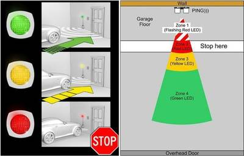
"Parking sensors use a type of sonar. The term sonar is an acronym for sound navigation and radar; it's used for calculating the distance and/or direction of an object from the time it takes for a sound wave to travel to the target and back. An ultrasonic sensor is a speaker or microphone that emits or receives ultrasound. There is also a type that can handle both emission and reception. Vehicle parking sensors are equipped with this type of sensor. Ultrasound sensors initially found use in vehicles for detecting obstacles when parking but it is now evolving into an automatic parking system."
Environment Air Quality Monitor
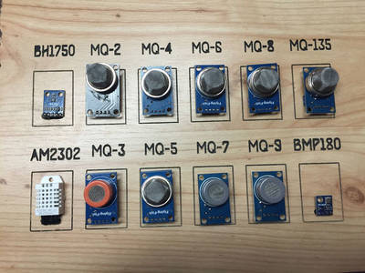
"I wanted to build an environmental monitor. Partly to see what happens from day to day and also because I wanted to compare all the different MQ Sensors and see how they respond to different things. Using a Linkit one allowed me to add GPS logging to make this a mobile platform."
Dual Motor L298 H-Bridge Motor Control
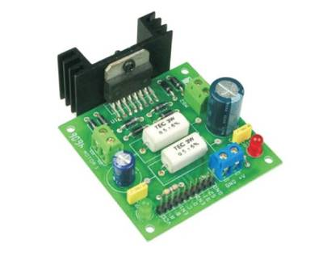
"Dual Motor L298 H-Bridge Control project can control two DC motors connected to it. The circuit has been designed around popular dual H-Bridge L298 from ST. This circuit has current sense resistors for both H-bridges to provide voltage which enables this board to use in stepper motor applications."
Wii Nunchuk Mouse Controller- Arduino Uno
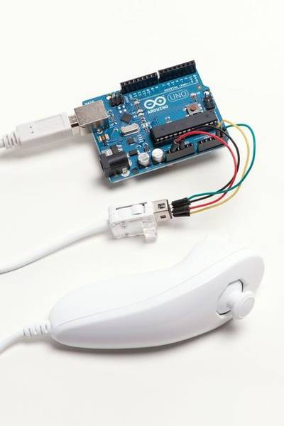
"I based my design on the Wii Nunchuk controller for several reasons. First, it’s a versatile, comfortable, well-designed controller; second, it‘s cheap and easy to find; and third, its native I2C serial protocol is easy to interface with Arduino. As a bonus, the connector will accept standard jumper wires, so there’s no need to cut up the cable or use a dedicated adapter. The Arduino runs a sketch that reads data from the controller and prints to the computer’s serial port. The computer runs a Python script, which receives serial data and emulates a mouse."
Touch Sensor Created With Attiny13A
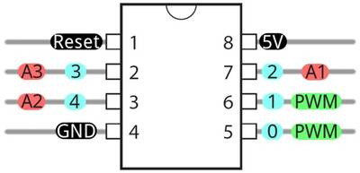
"This project was finished long while ago,by the time that i wanted to make a touch pad then searched the internet and found a .c file contains touching function,after poking with it in hardware found it didn't work,but after second thought and modified the wiring indicated by the sketch.it worked.,I share it now wanting someone to explain it to me.bcz i don't have extensive knowledge behind it.so it could not be called an instructable.but maybe someone may find it useful."
Arduino Based Music Rhythm LED Lighting effect Box
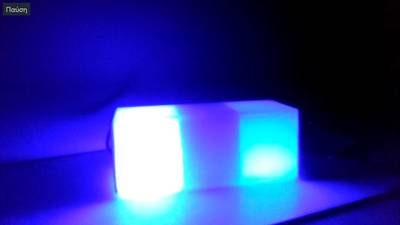
"In this project I will show you how to make your own music rhythm LED lighting effect box , Arduino based circuit with the ATtiny45 micro-controller. This is a simply way to make an led lighting effect by reading sound values from an analog input pin. It's not the correct way to analyze sound signals but it will flash the LEDs in music rhythm."
DIY Color Sensor
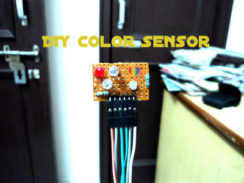
"It is working on a very simple principle as we are giving all basic colors to the object in front,red,green and blue colors make white light present around us and when the white light strikes any object then it reflects back at different wavelength and hence we see the color of an object,this happens because the vibration reduces when the white light strikes object and hence the white light scatters into 7 colors and every single one changes at different value.Same s done here,firstly all primary colors are emitted by L.E.D s and then the LDR (Light Dependent Resistor) receives the changed wavelength hence giving us the R,G and B values of color of an object!!"
How To Control a Stepper Motor with A4988 Driver and Arduino
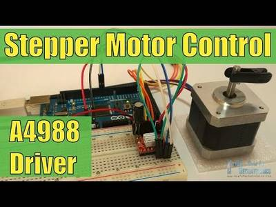
"In this Arduino Tutorial we will learn how to control a Stepper Motor using the A4988 Stepper Driver. You can watch the following video or read the written tutorial below."
9-Charlieplexor (9-pins for 72 LEDs)
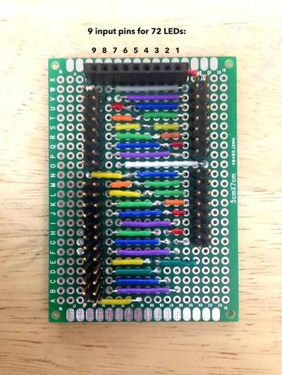
"This Instructable shows how to wire a 9-Charlieplexor. (Formally this is a "Charlieplexing circuit with 9 nodes" capable of controlling 72 LEDs or less.) A general method could be taken from this layout for larger Charlieplexors. I will likely put in a larger Charlieplexor circuit that I might get made, but I stopped at a setup large enough for an 8x8 array. This is because wiring a 9-CP by hand in a non-compressed array already involves over a hundred circuit connections, not to mention the 72 jumper and 72 lead connections to the LEDs themselves. I have already built the LED arrays (in 3 panels) and I plan to have a ribbon coming off each sub-array panel to plug into the board above. The 72 jumpers are pretty quick to wire, but it is already obvious that ~24 wires coming off each panel would be painful to plug in individually."
Tiny Mic Preamplifier
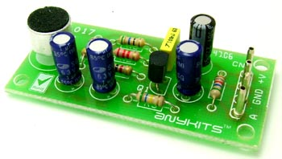
"The Tiny Mic Preamplifier based is based on a single transistor amplifier design. It amplifies the output of the electret condenser microphone. Good choice for Karaoke."
Sunshine Alarm using LM555 and LM358
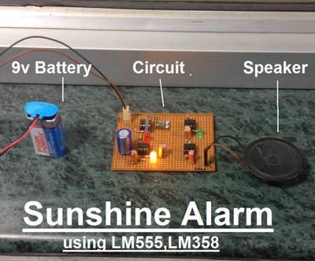
"This is a simple design alarm for your winter breaks. With this alarm you need not set time, it detects the day light in the morning and generates beep sound for approx. 1 minute. You need not set time for your winters, just set the sensitivity for the daylight detection through the potentiometer."
Compras ^
Artigos do ebay ou de outras lojas online que poderão ser úteis em projetos. A informação aqui presente apenas serve para ajudar na aquisição dos componentes. O altLab não tem qualquer intervenção/participação em qualquer negócio aqui apresentado.
10PCS IC DS1307 DS1307N DIP8 RTC SERIAL 512K I2C REAL-TIME CLOCK NEW QJ59 (http://www.ebay.co.uk/itm/121832799836) - £0.99
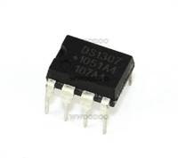
Product Description:
10PCS IC DS1307 DS1307N DIP8 RTC SERIAL 512K I2C Real-Time Clock NEW.
1602 16x2 HD44780 Character LCD /w IIC/I2C Serial Interface Adapter Module (http://www.ebay.co.uk/itm/272057967449) - £2.07
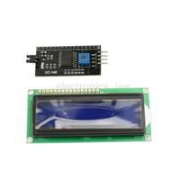
Item Description
Features for 1602 LCD:
- LCD display module with blue blacklight.
- Wide viewing angle and high contrast.
- Built-in industry standard HD44780 equivalent LCD controller.
- Commonly used in: copiers, fax machines, laser printers, industrial test equipment, networking equipment such as routers and storage devices.
- LCM type: Characters
- Can display 2-lines X 16-characters.
- Voltage: 5V DC.
- Module dimension: 80mm x 35mm x 11mm.
- Viewing area size: 64.5mm x 16mm
Features IIC/I2C :
- Arduino 1602 I2C interface 4-wire 1602 screen
- IO port of Arduino control board is only 20,so IO ports is not enough for many sensor, SD card, relay modules.
- The original 1602 screen need 7 IO ports to drive up, and this module can save 5 IO ports.
Package including:
- 1pcs 1602 16x2 HD44780 Character LCD
- 1pcs IIC/I2C Serial Interface Adapter Module for Arduino
That's all Folks!